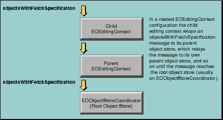

Table of Contents
Table of Contents  Next Section
Table of Contents
Next Section
Table of Contents  Previous Section
Previous Section
Figure 37. Typical Configuration of a Non-Graphical-User-Interface Application
In an application that doesn't have a graphical user interface, your code must initiate the creation of the network of the behind-the-scenes objects. This creation process is typically begun when you allocate and initialize an EOEditingContext.
In Java:
EOEditingContext editingContext = new EOEditingContext();In Objective-C:
EOEditingContext *editingContext =Both of the examples above create a new editing context and connect it to an EOObjectStoreCoordinator. By default, the editing context is connected to the default object store coordinator as determined by EOObjectStoreCoordinator's defaultCoordinator static method (class method in Objective-C).
[[EOEditingContext alloc] init];
Figure 38. Allocating and Initializing an EOEditingContext
The first time defaultCoordinator is invoked, it creates an EOObjectStoreCoordinator. Subsequent invocations return the same instance. Consequently, all the editing contexts in an application are connected to EODatabaseContext objects through the same EOObjectStoreCoordinator by default.
The remaining objects in the network are created on demand. When a database operation is initiated with a message to an editing context, the request is passed on to its object store coordinator. In the case of a nested editing context configuration, the message is passed down the object network until reaches the editing context's root object store-usually an EOObjectStoreCoordinator.
For example, an objectsWithFetchSpecification message sent to an EOEditingContext percolates through its parent object stores until it reaches the coordinator as shown in Figure 39.

Figure 39. How Messages Percolate Down to an EOObjectStoreCoordinator
Inside EOObjectStoreCoordinator
When an EOObjectStoreCoordinator receives a message requiring interaction with the database, it attempts to locate an EOCooperatingObjectStore-usually an EODatabaseContext-that can handle the request. The coordinator generally builds its list of cooperating stores on demand as follows:
In a typical Enterprise Objects Framework application, an EOObjectStoreCoordinator's cooperating stores are EODatabaseContexts. The EODatabaseContext class registers for the CooperatingObjectStoreNeeded notification, and provides the coordinator with a new database context that can accommodate the request. Consequently, you don't have to provide cooperating stores to a coordinator yourself unless you're using a subclass of EOCooperatingObjectStore that isn't an EODatabaseContext.
Substituting a Custom EOCooperatingObjectStore
There are two approaches to providing a custom EOCooperatingObjectStore to an EOObjectStoreCoordinator:
If the EOCooperatingObjectStore is a subclass of EODatabaseContext, you can simply tell EODatabaseContext to register instances of the subclass instead of EODatabaseContext instances. Use the EODatabaseContext static method setContextClassToRegister (setContextClassToRegister: class method in Objective-C) to specify your subclass.
To register your own cooperating store, add yourself as an observer of CooperatingObjectStoreNeeded notifications. When you receive a notification, create an instance of your custom store and use the EOObjectStoreCoordinator method addCooperatingObjectStore (addCooperatingObjectStore: in Objective-C) to register your cooperating store with the coordinator. To prevent EODatabaseContext from registering competing object stores, invoke the EODatabaseContext static method setContextClassToRegister with null (nil in Objective-C) as the argument.
Table of Contents Next Section